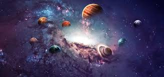
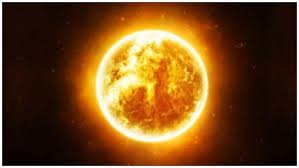

<!DOCTYPE html>
<html>

<head>
<title>Sistema Solar</title>
<meta charset = 'utf-8'>

</head>
<link rel= 'stylesheet' type='text/css' href='../css/estilos.css'>
</html>
<h1><body style = 'text-align:center;'><script>

/*
RAINBOW TEXT Script by Matt Hedgecoe (c) 2002
Featured on JavaScript Kit
For this script, visit http://www.javascriptkit.com
*/

// ********** cambia aquí

var text="Sol" // tu texto
var speed=80 // velocidad de movimiento 


if (document.all||document.getElementById){
document.write('<span id="highlight">' + text + '</span>')
var storetext=document.getElementById? document.getElementById("highlight") : document.all.highlight
}
else
document.write(text)
var hex=new Array("00","14","28","3C","50","64","78","8C","A0","B4","C8","DC","F0")
var r=1
var g=1
var b=1
var seq=1
function changetext(){
rainbow="#"+hex[r]+hex[g]+hex[b]
storetext.style.color=rainbow
}
function change(){
if (seq==6){
b--
if (b==0)
seq=1
}
if (seq==5){
r++
if (r==12)
seq=6
}
if (seq==4){
g--
if (g==0)
seq=5
}
if (seq==3){
b++
if (b==12)
seq=4
}
if (seq==2){
r--
if (r==0)
seq=3
}
if (seq==1){
g++
if (g==12)
seq=2
}
changetext()
}
function starteffect(){
if (document.all||document.getElementById)
flash=setInterval("change()",speed)
}
starteffect()
</script></body></h1>

<body>
<div align="center"></div>

<h3>¿Qué es el Sol?</h3>

<h5 align="left">Llamamos Sol a la estrella más cercana a nuestro planeta (149,6 millones de kilómetros). A su alrededor orbitan todos los planetas del Sistema Solar, atraídos por su gravedad, así como los cometas y asteroides que los acompañan.
</h5>
<h5 align="left">El Sol es una estrella bastante común de nuestra galaxia, es decir que no se destaca por ser mucho más grande ni mucho más pequeña que otras.
</h5>
<h5 align="left">El Sol es una estrella bastante común de nuestra galaxia, es decir que no se destaca por ser mucho más grande ni mucho más pequeña que otras.</h5>
<h5 align="left">
Se trata de una estrella enana amarilla tipo G2, que atraviesa su secuencia principal de vida. Se encuentra en la región exterior de la Vía Láctea, en uno de los brazos espirales de la misma, a unos 26.000 años luz de su centro.</h5>
<h5 align="left">
Su tamaño es tal que representa el 99% de la masa del sistema solar, lo cual equivale a 743 veces la masa total de todos y cada uno los planetas del mismo combinados (unas 330.000 veces la masa terrestre).</h5>
<h5 align="left">
Por otro lado, el Sol tiene un diámetro de 1,4 millones de kilómetros, lo cual hace de él el objeto más grande y más luminoso del cielo terrestre, a punto tal de distinguir con su presencia entre el día y la noche.</h5>
<h5 align="left">
Gracias a su constante emisión de radiaciones electromagnéticas (entre ellas la luz perceptible) nuestro planeta recibe calor e iluminación, haciendo posible el desarrollo de la vida.</h5>

<h3>¿Cómo está compuesto?</h3>
<h5 align="left">El Sol es una inmensa bola de plasma, casi totalmente redonda, compuesta principalmente por hidrógeno (74,9%) y helio (23,8%). Además, contiene una porción ínfima en comparación (2%) de elementos como oxígeno, carbono, neón y hierro.</h5>
<h5 align="left">
El hidrógeno es el material combustible del Sol, y a medida que se consume se va convirtiendo en helio, dejando una capa de “cenizas de helio”. Esta capa se incrementará a medida que la estrella termine su ciclo principal de vida.
</h5>

<h5 align="left">El Sol es esférico, con un leve achatamiento en los polos debido a su movimiento de rotación.
</h5>
<h5 align="left">
Su equilibrio físico (hidrostático) se debe a la cancelación interna de la gigantesca fuerza de gravedad que su masa le otorga, y el empuje de la explosión interna. Esa explosión es producida por las reacciones nucleares de la fusión masiva del hidrógeno.
</h5>
<h3>Estructura</h3>
<h5 align="left">
El Sol se estructura en capas, como una cebolla. Dichas capas son:
</h5>
<h5 align="left">
Núcleo. La región más interna. Ocupa una quinta parte de la estrella, unos 139.000 km de su radio total. Es donde ocurre la gigantesca explosión atómica que es el Sol. Es tal la gravedad que hay en el núcleo, que a la energía producida de esta manera le toma un millón de años ascender hasta la superficie.</h5>
<h5 align="left">
Zona radiante. Está compuesta de plasma (helio e hidrógeno gaseoso ionizado). Es la región que permite una fácil radiación de la energía interior del Sol hacia afuera, disminuyendo considerablemente la temperatura en esta zona.</h5>
<h5 align="left">
Zona convectiva. En esta región los gases dejan de estar ionizados, por lo que es más difícil a la energía (fotones) escapar hacia afuera, teniendo que hacerlo por convección calórica. Esto significa que el fluido se calienta de manera desigual, dando origen así a dilataciones, pérdidas de densidad y corrientes ascendentes y descendentes, como una marea.</h5>
<h5 align="left">
Fotósfera. Esta es la zona donde se emite la luz visible del Sol. Se la percibe como gránulos brillantes sobre una superficie más oscura, a pesar de ser una capa transparente de unos 100 a 200 km de profundidad, considerada la superficie del Sol. Allí aparecen también las manchas solares, debidas a sustancias producidas en la propia estrella.</h5>
<h5 align="left">
Cromósfera. Una capa externa de la propia fotósfera, mucho más translúcida y difícil de ver, pues la opaca el brillo de la capa anterior. Su tamaño es de alrededor de 10.000 km y durante un eclipse puede verse como un tono rojizo exterior.</h5>
<h5 align="left">
Corona solar. Estas son las capas más tenues de la atmósfera solar externa, en las que la temperatura aumenta considerablemente respecto a las capas más interiores. Es un misterio aún irresuelto de la naturaleza solar. En ella se dan bajas densidades de materia e intensos campos magnéticos, surcados por energía y materia a elevadísimas velocidades. Además, es fuente de numerosos rayos X.</h5>
<div align="center"></div>

<tr>
<td><div align="center"><a href = 'planetas.html'></a><figcaption style = 'text-align:center;color:blue;'>Los planetas</figcaption></div></td>
</tr>
<tr>
<td><div align="center"><a href = 'historia.html'></a><figcaption style = 'text-align:center;color:blue;'>Historia</figcaption></div></td>
</tr>
<tr>
<td><div align="center"><a href = 'astrologia.html'></a><figcaption style = 'text-align:center;color:blue;'>Astrología y astronomía</figcaption></div></td>
</tr>
<tr>
<td><div align="center"><a href = 'curiosidades.html'></a><figcaption style = 'text-align:center;color:blue;'>Curiosidades</figcaption></div></td>
</tr>
<tr>
<td><div align="center"><a href = 'unpocodehumor.html'></a><figcaption style = 'text-align:center;color:blue;'>Un poco de humor</figcaption></div></td>
</tr>

<tr>
<td><div align="center"><a href = '.sol.html'></a><figcaption style = 'text-align:center;color:blue;'>Sol</figcaption></div></td>
</tr>
<tr>
<td><div align="center"><a href = 'energia.html'></a><figcaption style = 'text-align:center;color:blue;'>Energía solar</figcaption></div></td>
</tr>
<tr>
<td><div align="center"><a href = 'formacion.html'></a><figcaption style = 'text-align:center;color:blue;'>Formación del sistema solar</figcaption></div></td>
</tr>
<tr>
<td><div align="center"><a href ='nasa.html'></a><figcaption style = 'text-align:center;color:blue;'>Nasa</figcaption></div></td>
</tr>
</body>
